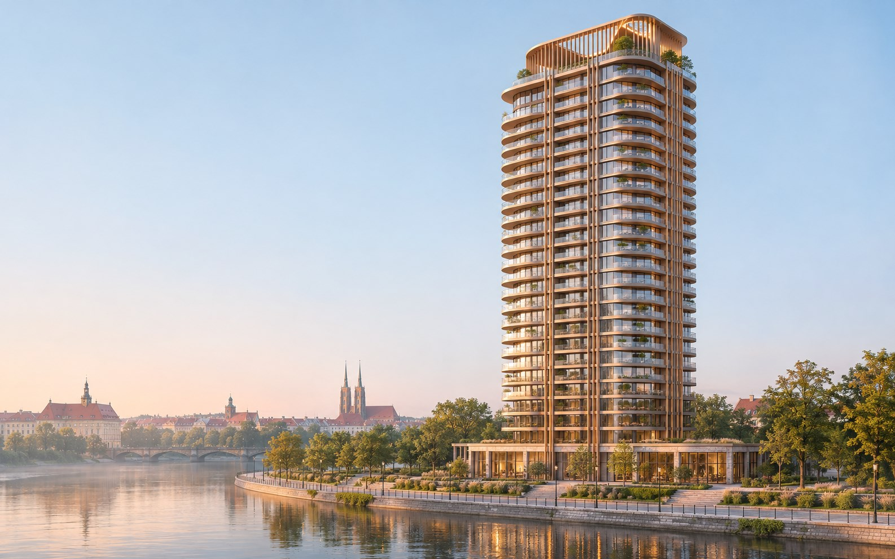
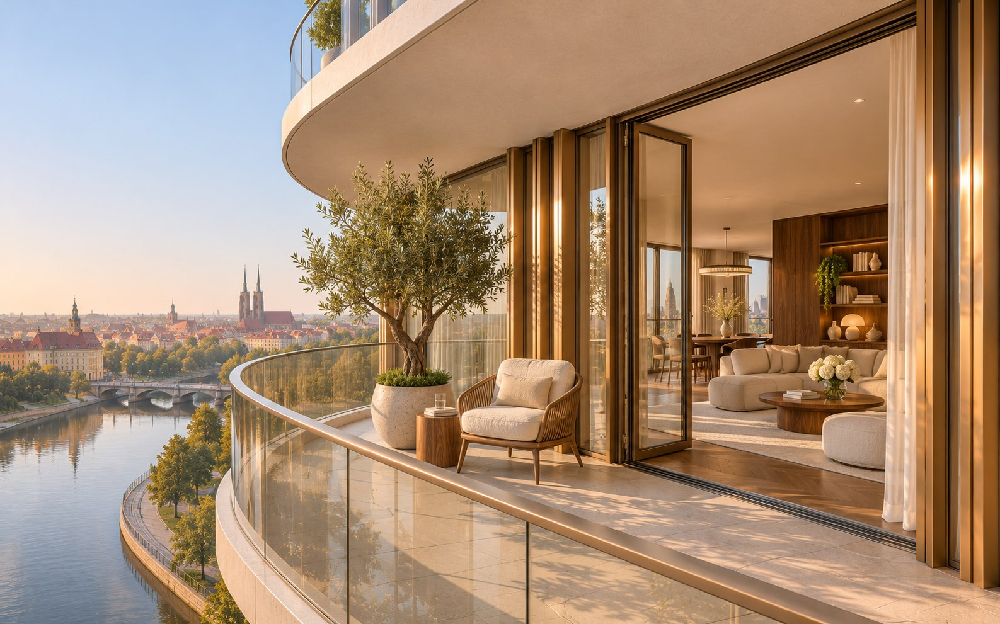
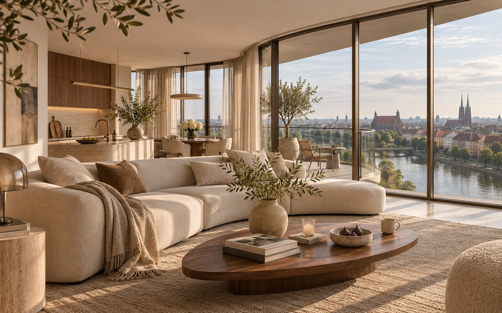

Niebo jest
bliżej.
Miasto w Twoim rytmie.
Przestrzeń na Twoich zasadach.
WIZJA NOWEGO ADRESU
Więcej nieba.
Mniej codzienności.
Są adresy, które zmieniają perspektywę. I miejsca, w których po prostu chcesz zostać.
NEBOSA TOWER to wizja apartamentowca nad Odrą. Smukła architektura, światło wpadające przez panoramiczne okna i prywatne balkony otwarte na miasto. Twój dom — z odrobiną więcej przestrzeni na oddech.
Fikcyjna inwestycja we Wrocławiu. Projekt prezentacyjny.nowej perspektywy
w katalogu koncepcyjnym
dla Twojego stylu życia
Wybierz swój
horyzont.
Kliknij piętro na budynku.
Odkryj apartament i zobacz, co kryje się za widokiem.
Twój rytm.
Twój apartament.
| Lokal | Piętro | Pokoje | Metraż | Cena / m² | Cena brutto | Status | Szczegóły |
|---|
Spójrz z innej perspektywy.
Żaden apartament nie pasuje do wybranych kryteriów. Zmień filtry lub wyczyść ustawienia.
Wszystkie lokale, metraże, ceny, statusy i rzuty są przykładowe. Katalog nie stanowi oferty sprzedaży rzeczywistej nieruchomości.
Dobrze jest
być u siebie.
Prawdziwy komfort nie potrzebuje wielkich słów. Wystarczy, że czujesz go na co dzień.
01 Światło od pierwszej chwili +
Panoramiczne przeszklenia i przemyślana orientacja lokali. W koncepcji wnętrz wykorzystujemy naturalny dąb, kamień i spokojne odcienie, które zostawiają miejsce na Twój charakter.
02 Prywatny kawałek nieba +
Każdy apartament ma balkon lub taras. Wyższe kondygnacje otwierają widok na rzekę i miejską panoramę; ekspozycję oraz powierzchnię balkonu znajdziesz w karcie lokalu.
03 Wygoda, która zostaje w tle +
Wizja budynku obejmuje reprezentacyjne lobby, trzy windy, rowerownię oraz podziemny parking. Miejsca parkingowe i komórki są dodatkowymi opcjami — ceny pokazujemy osobno w karcie apartamentu.
Porozmawiajmy
o Twojej perspektywie.
Masz już swój ulubiony apartament?
A może dopiero szukasz kierunku?